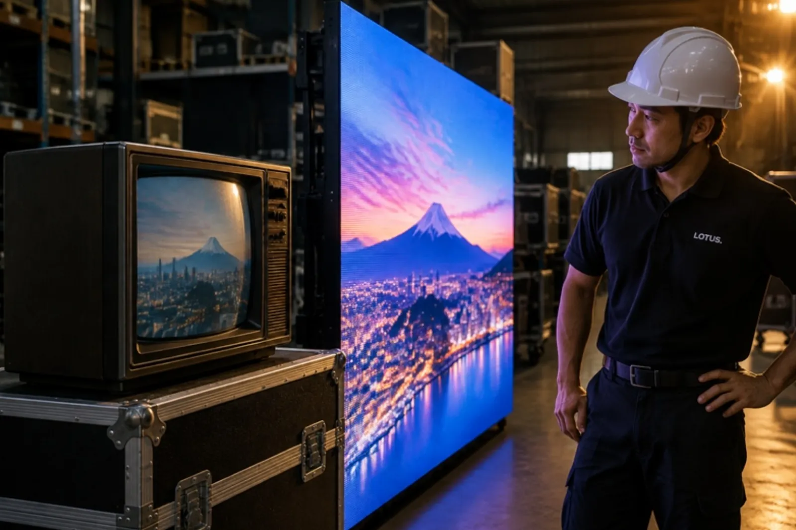

LOTUS VISUAL JOURNAL / 歴史の裏側 #01
LED より前の大画面。
ブラウン管でできた「テレビの壁」
もし、球場の大型ビジョンが、家のテレビと同じブラウン管でできていたら。
冗談のようですが、自ら光る大型カラー映像装置の歴史は、その発想から始まりました。年末に向けて、街やホールで大きな画面を見かける季節です。今日は、その「大きな画面」がどうやって生まれたのか、少し時間をさかのぼります。
01 / 19801980 年、ロサンゼルスの球場で
1980 年、アメリカ・ロサンゼルスのドジャースタジアムに、それまでにない画面が現れました。白黒の電光掲示板ではなく、カラーの「映像」がそのまま映る、屋外の大型ディスプレイです。つくったのは日本の三菱電機でした。
中身をのぞくと、驚くほど素朴な発想でできています。画素の一つひとつが、小さなブラウン管。家庭のテレビのブラウン管は、電子のビームで画面をなぞって絵を描きますが、この画面の管は、ビームを広げて蛍光面全体をむらなく光らせる「光る管」として使われました。赤・緑・青・緑の 4 つの発光素子で 1 つの画素をつくり、その画素を縦横に何列も並べる。テレビを 1 台つくるのではなく、テレビの「光る点」を壁一面に並べたわけです。
この画面は、のちに電気・電子分野の国際学会 IEEE から、技術史に残る「マイルストーン」に認定されました。2018 年、記念の銘板が置かれたのは、三菱電機の長崎製作所です。
02 / TSUKUBA1985 年、つくばに立った巨大テレビ
その 5 年後、日本で、もっと大きな画面が立ち上がります。1985 年 3 月に始まった国際科学技術博覧会、通称つくば科学万博。会場にソニーが建てた「ジャンボトロン」は、ギネス世界記録に「最大のテレビ」として載っています。記録上の大きさは、24.3m×45.7m。7〜8 階建てのビルの高さに、学校のプールより長い幅の画面が、屋外で映像を流していたことになります。
この画面も、仕組みの考え方は同じでした。小さな発光素子を集めて 1 つの画素をつくり、その画素をタイルのように敷き詰める。ひとつの巨大な管をつくるのは無理でも、小さな部品を数えきれないほど並べれば、大きさに上限はなくなる。大画面の歴史は、最初から「分けて、並べる」技術だったのです。
大画面は、大きな 1 枚ではなく、小さな光の「粒」を並べてつくる。この考え方は、40 年以上たったいまも変わっていません。
03 / BLUE足りなかったのは、青
では、なぜ最初から LED を並べなかったのか。答えは、色にあります。光の三原色は赤・緑・青。赤と緑の LED は早くからありましたが、明るく効率のよい青い LED だけが、長いあいだ作れませんでした。ノーベル財団の発表によれば、それは「30 年にわたる難題」でした。
この壁を越えたのが、赤﨑勇さん、天野浩さん、中村修二さんです。1990 年代の初めに効率のよい青色 LED を実現し、2014 年にノーベル物理学賞を受けました。授賞理由は、青色 LED が明るく省エネルギーな白い光を可能にしたこと。三色がそろったことで、LED は照明にも、そしてフルカラーの大画面にも使えるようになりました。
ここで、話がひっくり返ります。ブラウン管の画面と、いまの LED の画面は、まったく別の技術に見えます。けれど、変わったのは「粒」の中身だけでした。管がチップになり、粒が小さく、軽く、明るくなった。小さな光を並べて大きな絵をつくる、という 1980 年の発想は、そっくりそのまま生きています。大画面の歴史は、発明の歴史であると同時に、ひとつの発想を磨き続けた歴史でもあるのです。
LOTUS VISUAL の現場では
いまの LED の大画面も、数十枚、数百枚のパネルを組んでできています。そして、粒を並べる画面ならではの課題も、1980 年からあまり変わっていません。隣どうしのパネルで明るさや色がそろっているか。継ぎ目が目立たないか。1 枚が点かなくなったとき、すぐに替えられるか。
だから現場では、組み上げたあとに全面を白や単色で光らせて、色のむらや点かない粒がないかを確かめます。予備のパネルやモジュールを手の届く場所に置き、交換の手順を決めておきます。並べる技術は、並べたあとの確認とセットで、はじめて画面になります。部品の入れ替えの話は 全部入れ替えても、同じ画面と言えるか に、画面の大きさの話は 画面は大きいほどいい? にも書きました。
今日の持ち帰り
- 自ら光る大型カラー映像装置の始まりは、ブラウン管の粒だった。1980 年、ドジャースタジアムに三菱電機の屋外カラー映像装置。
- 大画面は「分けて、並べる」技術。1985 年のジャンボトロンも、いまの LED も、小さな光を敷き詰めている。
- 並べたら、そろえる。色と明るさの確認、予備と交換の段取りまでが、大画面の仕事。
関連:LED ビジョン・映像機材のレンタル・イベント映像の事業案内
出典:IEEE / Engineering and Technology History Wiki「Milestones: Outdoor large-scale color display system, 1980」（2026年11月10日閲覧）(三菱電機が 1980 年にドジャースタジアムへ設置、CRT 方式の発光管を画素に使用、画素は赤・緑・青・緑の 4 要素、2018 年 3 月 7 日に長崎製作所で記念銘板を除幕)。Guinness World Records「Largest television」（2026年11月10日閲覧）(ソニー ジャンボトロン、24.3m×45.7m、1985 年 3 月、つくば国際科学技術博覧会)。ノーベル財団 2014 年物理学賞プレスリリース(青色 LED は 30 年の難題、赤﨑勇・天野浩・中村修二、授賞理由)。現場の例は一般的な説明で、特定の案件を表しません。